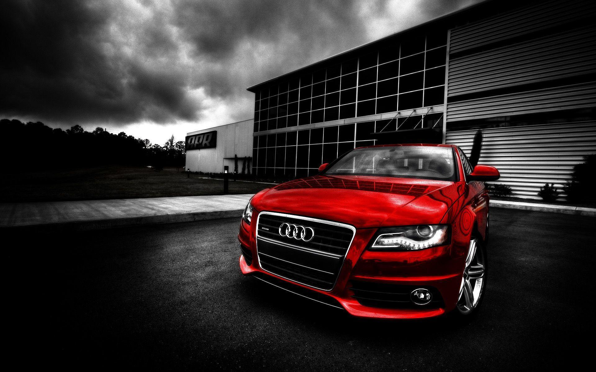

All About Audi
Audi is one of the world’s leading premium brands and has been a member of the Volkswagen Group since 1965. The company has production facilities in Ingolstadt and Neckarsulm as well as in 16 other international locations. The difficult market environment and the WLTP test procedure posed challenges for Audi particularly in the first half of 2019. Nevertheless, the Audi brand delivered a total of 1.9 million vehicles to customers (+1.8%) and achieved an operating return on sales of 8.0 percent. “Vorsprung” is Audi’s active brand promise that is delivered throughout the world and that is currently being redefined by the brand with the four rings, as it moves away from the narrow focus on technical feasibility and towards a new approach, where the customer is at the center. In 2019, Audi expanded its vehicle range and celebrated over 20 market launches. The highlight of the year was the market introduction of the Audi e-tron. The all-electric SUV was rolled out in Europe, China and the USA. The vehicle stands out with a high-quality interior and is packed with technological highlights. The all-electric Q2L e-tron debuted on the Chinese market. With concept vehicles such as the e-tron GT concept, Q4 e-tron concept, AI:TRAIL, AI:ME and others, Audi showcased further potential in e-mobility and artificial intelligence. By 2025, Audi plans to bring more than 30 electrified models to market, including 20 with pure electric drive. Audi is thereby following its strategic focus and consistently pursuing sustainable premium mobility. Alongside the electrified models, the vehicles Audi presented in 2019 included the fourth generation of the bestselling A6 and the dynamic RS 7 Sportback.